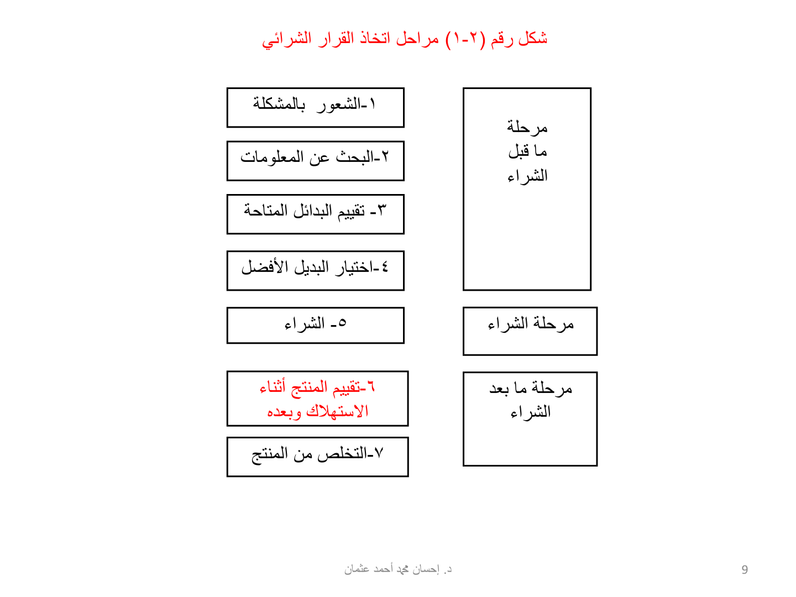
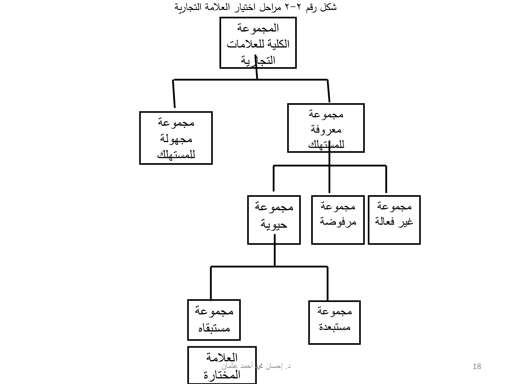
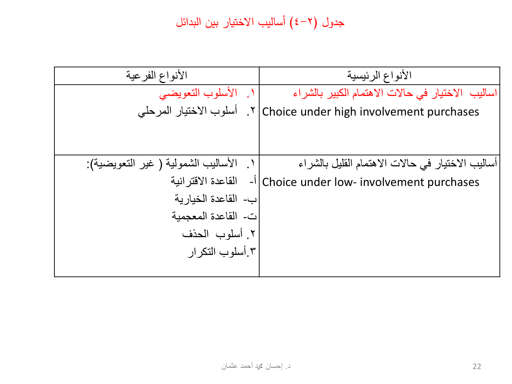
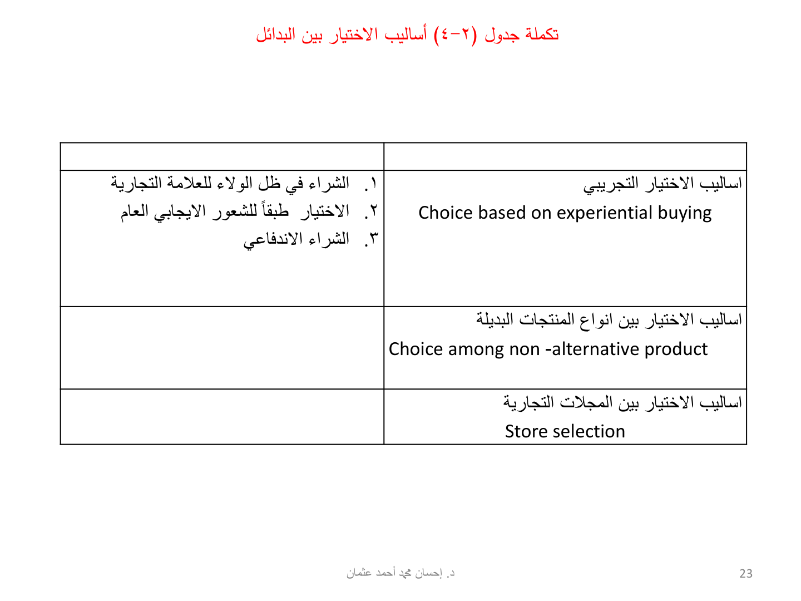
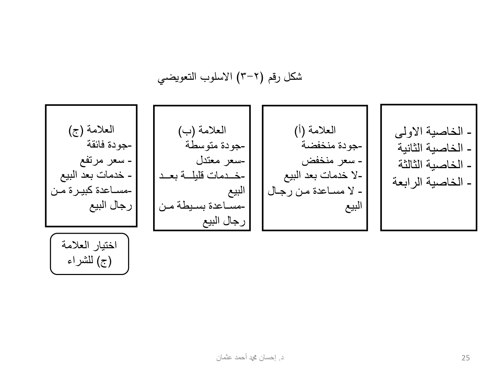
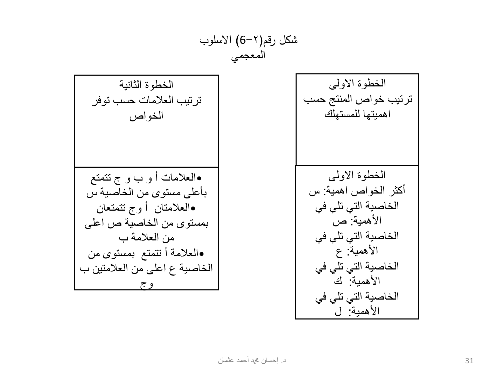
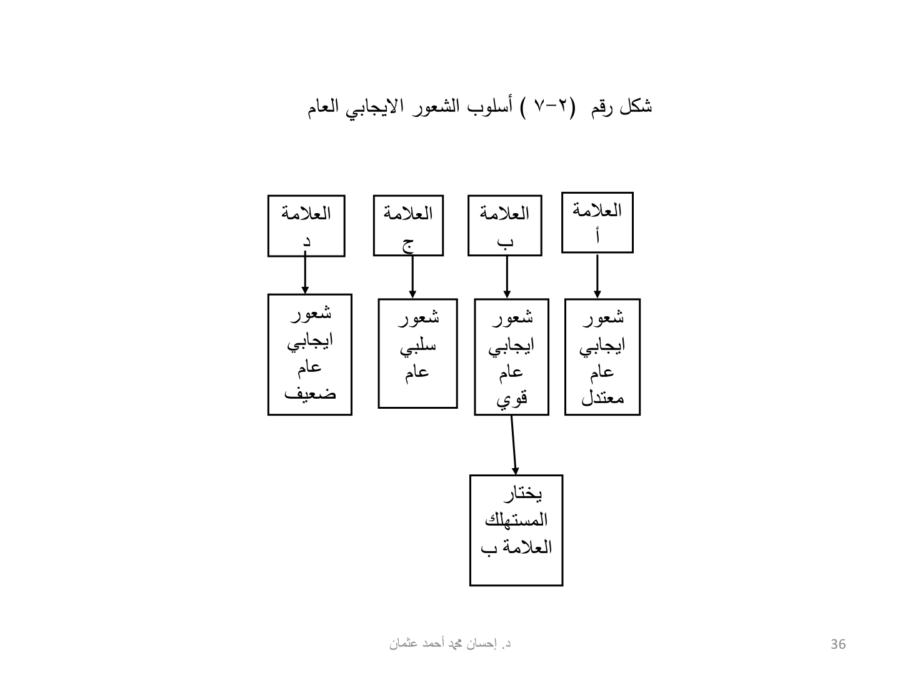
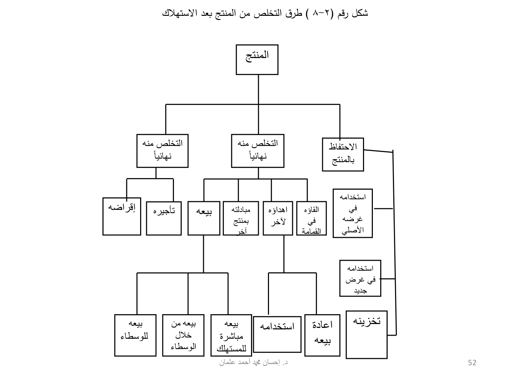

النقاط الأساسية من شرائح الفصل (65 شريحة). الملخص الكامل على الدرايف.
الفكرة العامة
هذا الفصل يشرح كيف المستهلك يوصل لقرار الشراء: وش أنواع القرارات، ووش المراحل السبع من الشعور بالمشكلة لين التخلص من المنتج، وكيف يختار بين البدائل. وفي الآخر يشرح أربع أساليب لحل المشكلة الاستهلاكية من المسهب لين الروتيني. ركّز على التعريفات والقوائم والأعداد لأنها هي اللي تجي في الاختبار.
🎯 نواتج التعلّم
وش المطلوب منك في هذا الفصل
يستعرض أنواع القرارات الشرائية
يشرح مراحل عملية اتخاذ القرار الشرائي
يناقش أساليب حل المشكلة الاستهلاكية
أنواع القرارات الشرائية
شرائح 6، 7
القرارات تنقسم لـ 4 أنواع رئيسية
تخصيص الموارد: يصرف كل فلوسه ولا يدخر، متى يصرف، كيف يوزع وقته، وهل يقترض
شراء المنتجات من عدمه: يتأثر بقائمة الأولويات وحجم الموارد المتاحة
علامة بعينها أو طراز معين: يجي بعد ما قرر نوع المنتج، ويشمل الشكل والتصميم
اختيار المحلات التجارية: المحلات تتنافس بشتى الوسائل تجذبه لها
نص الشريحة — احفظه يمكن تقسيم القرارات التي يتخذها المستهلك الى أربعة أنواع رئيسية
مراحل عملية اتخاذ القرار الشرائي
شرائح 8، 9
الهدف من القرار: حل المشكلة الاستهلاكية
3 مراحل رئيسية فيها 7 خطوات
قبل الشراء (4): الشعور بالمشكلة، البحث عن المعلومات، تقييم البدائل، اختيار البديل الأفضل
الشراء (1): إتمام الشراء
بعد الشراء (2): تقييم المنتج أثناء الاستهلاك وبعده، التخلص من المنتج
نص الشريحة — احفظه يهدف المستهلكون من وراء اتخاذ القرارات الشرائية الى حل مشاكلهم الاستهلاكية. وفي هذا المجال تتكون عملية اتخاذ القرار الشرائي من ثلاث مراحل رئيسية يمر المستهلك في كل منها بخطوة أو أكثر.

الشكل (2-1) مراحل اتخاذ القرار الشرائي: 3 مراحل و7 خطوات — شريحة 9
الخطوة 1: الشعور بالمشكلة الاستهلاكية
شرائح 10، 11
نقطة البداية: حاجة غير مشبعة ودافع لإشباعها
المشكلة تطلع لما يختل التكافؤ بين الحالة الحالية والحالة المرغوبة
لها مصدرين: تغيرات في الحالة الحالية وتغيرات في الحالة المرغوبة
الحالية (3): نضوب المخزون، عدم الرضا عن المخزون الحالي، تناقص الموارد المالية
المرغوبة (4): حاجات جديدة، رغبات جديدة، منتجات جديدة في الأسواق، المنتجات المكملة
نص الشريحة — احفظه تمثل هذه الخطوة نقطة البداية في عملية اتخاذ القرار الشرائي عندما يدرك المستهلك أن لديه حاجة غير مشبعة ويجد في نفسه الدافع لإيجاد حل مناسب لإشباعها.
نص الشريحة — احفظه يشعر المستهلك بالمشكلة حينما يختل التكافؤ بين حالته الحالية والحالة المرغوبة.
الخطوة 2: البحث عن المعلومات
شرائح 12، 13، 14
نوعين رئيسيين من المصادر: داخلية وخارجية
الداخلية: خبرته وتجاربه السابقة وكل شي مخزن في ذاكرته
الخارجية: رسمية (غير شخصية) وغير رسمية (شخصية)
الرسمية 3: تجارية، حكومية، مستقلة
مثال الحكومية: مجلة المستهلك من هيئة المواصفات والمقاييس لدول مجلس التعاون
مثال المستقلة: اتحاد المستهلكين بالولايات المتحدة الأمريكية
غير الرسمية (العائلة والأقارب والأصدقاء) مصداقيتها أعلى وثقتها أكبر
نص الشريحة — احفظه وتمثل مصادر المعلومات الخارجية التي يحصل عليها المستهلك من البيئة التي حوله.
نص الشريحة — احفظه تضم مصادر المعلومات غير الرسمية أفراد العائلة والأقارب والاصدقاء، وغالباً ما تتمتع بمصداقية أعلى وثقة أكبر بين المستهلكين.
الخطوة 3: تقييم البدائل المتاحة
شرائح 15، 16
يقيّم البدائل بمعايير تعكس المواصفات المرغوبة
المعايير موضوعية (زي قوة موتور السيارة) أو شخصية (زي صورة الطبقة الاجتماعية) أو الاثنين
فيه معايير هامة Salient، وفي مقدمتها حاسمة Determinant تحسم الاختيار
الحاجة الماسة ← مجهود تقييم أقل
أهمية المنتج (منزل، سيارة) والمخاطرة المدركة ← مجهود أكبر
نص الشريحة — احفظه بعد جمع المعلومات اللازمة عن البدائل المتوفرة في السوق يقوم المستهلك بتقييمها باستخدام عدد من المعايير التي تعكس المواصفات المرغوبة في المنتج.
نص الشريحة — احفظه معايير (حاسمة Determinant) تقود عملية الاختيار وتحسمها له لأنها الأكثر أهمية بالمقارنة بكل المعايير الأخرى من وجهه نظره.
مجموعات العلامات التجارية
شرائح 17، 18، 19
المجموعة الكاملة: كل الماركات تحت نوع المنتج، والمستهلك يعرف بعضها بس
شغل مدير التسويق: يخلي ماركته معروفة عشان تدخل التقييم
الكلية ← معروفة ومجهولة
المعروفة ← حيوية ومرفوضة وغير فعالة
الحيوية ← مستبقاه ومستبعدة، ومن المستبقاه تطلع العلامة المختارة
الحيوية اسمها الثاني Consideration set وغالباً من 2 إلى 5 علامات
نص الشريحة — احفظه وتتكون من العلامات التجارية التي لا يجد المستهلك في شرائها أية فائدة أو منفعة
نص الشريحة — احفظه تضم هذه المجموعة العلامة التجارية التي يستبعدها المستهلك من حسابه ويرفض شراءها، إما بسبب الآثار السيئة التي تركتها في نفسه نتيجة لتجربتها من قبل أو بسبب نصائح الآخرين.
نص الشريحة — احفظه تسمى هذه المجموعة ايضاً بالمجموعة المأخوذة في الاعتبار Consideration set وتضم عدداً صغيراً من العلامات التجارية التي يتذكرها المستهلك ويأخذها في اعتباره عند تقييم البدائل واتخاذ قرار الشراء، ثم ينتقى منها العلامة التجارية التي سيشتريها وغالباً ما تتراوح بين علامتين وخمس علامات.

الشكل (2-2) مراحل اختيار العلامة التجارية: من المجموعة الكلية للعلامة المختارة — شريحة 18
الخطوة 4: اختيار البديل الأفضل وجدول أساليب الاختيار
شرائح 20، 21، 22، 23
يختار من المجموعة الحيوية بقواعد تقلل عدد العلامات
الأسلوب يعتمد على 4: أهمية الشراء والاهتمام فيه، الخبرة، الوقت المتاح، النشاط التسويقي
5 مجموعات أساليب: اهتمام كبير، اهتمام قليل، تجريبي، منتجات غير بديلة، محلات تجارية

جدول (2-4) أساليب الاختيار بين البدائل: الاهتمام الكبير والاهتمام القليل — شريحة 22

تكملة جدول (2-4): الاختيار التجريبي، المنتجات غير البديلة، المحلات التجارية — شريحة 23
أساليب الاختيار في حالات الاهتمام الكبير
شرائح 24، 25
التعويضي: الصفات الممتازة تعوض الصفات المتدنية
الشكل (2-3): اختار (ج) مع إن سعرها مرتفع، لأن الجودة والخدمات والمساعدة عوضته
المرحلي: الاختيار يصير على مرحلتين
مثاله: اقتراني يقلل البدائل لـ 3 أو 4، بعدين معجمي أو تعويضي يحسم
نص الشريحة — احفظه يقوم المستهلك طبقاً لهذا الاسلوب باختيار البديل الذي يتميز ببعض الصفات الممتازة والتي تعوضه عن بعض الصفات الأخرى غير المقبولة أو المتدنية في المنتج او العلامة التجارية.
نص الشريحة — احفظه في هذا الاسلوب تتم عملية الاختيار على مرحلتين حيث يستخدم المستهلك اسلوبين شموليين واحداً بعد الآخر أو الى أحد الاساليب الشمولية أولاً ثم يستخدم الاسلوب التعويضي بعد ذلك.

الشكل (2-3) الأسلوب التعويضي: العلامة (ج) تفوز مع إن سعرها مرتفع — شريحة 25
أساليب الاختيار في حالات الاهتمام القليل
شرائح 26، 27، 28، 29، 30، 31، 32، 33
الشمولية = غير التعويضية: كل الخواص تدخل، والممتاز ما يغطي الرديء
الاقترانية: حد أدنى في كل الخواص
الخيارية: يكفي الحد الأدنى في أي خاصية بمفردها
الاقترانية والخيارية يطلعون بدائل كثيرة فيحتاجون أسلوب ثاني
المعجمية: ترتب الخواص وتاخذ الأعلى في أهمها، وإذا تعادلوا تروح للخاصية اللي بعدها
الحذف: يشيل اللي تحت الحد الأدنى خاصية ورا خاصية لين يبقى بديل واحد
التكرار: يعدّ الخواص الإيجابية والسلبية
نص الشريحة — احفظه وصف هذا النوع من الأساليب بالشمول لأن المستهلك يأخذ كل خواص المنتج في الاعتبار عند التقييم ولا يترك منها شيئاً كما أن الخواص الممتازة للمنتج لا تغني عن خواصه الرديئة أو المتدنية.
نص الشريحة — احفظه طبقاً لهذه القاعدة يحدد المستهلك حداً أدنى لكل خاصية يرغبها في المنتج ويستبعد كل العلامات والمنتجات التي لا يتوفر فيها الحد الأدنى من كل الخواص.
نص الشريحة — احفظه في هذه الحالة يقوم المستهلك ايضاً بتحديد حد أدنى لكل خاصية مرغوبة في المنتج على حده غير أنه يقبل البديل الذي يتوفر فيه الحد الأدنى لأي خاصية بمفردها.
نص الشريحة — احفظه طبقاً لهذا الاسلوب فإن عملية الاختيار التي يتبعها المستهلكون في حالات الاهتمام القليل بالمنتج تتأثر فقط بعدد الخواص الايجابية وعدد الخواص السلبية المرتبطة بالعلامة التجارية أو بعدد الجوانب او المزايا التي تتفوق فيها علامة ما على علامة أخرى.

الشكل (2-6) الأسلوب المعجمي: ترتيب الخواص ثم ترتيب العلامات — شريحة 31
الشعور العام: ما يقارن خواص، يختار اللي يحس نحوه بشعور إيجابي قوي (الشكل 2-7 ← ب)
الاندفاعي: شراء عفوي غير مخطط بسبب العرض أو تنشيط المبيعات، وله 5 خصائص
عوامله: المنتجات (5) والنشاط التسويقي (5)، أما المستهلكين فما فيه دليل علمي
الثلاثة يعتمدون على العاطفة أكثر من المقاييس الموضوعية
نص الشريحة — احفظه يمكن وصف الولاء لعلامة تجارية ما بانه درجة الايجابية في الاتجاهات النفسية للعميل نحو تلك العلامة ومدى التزامه بشرائها في الوقت الحاضر وعزمه على الاستمرار في شرائها في المستقبل.
نص الشريحة — احفظه طبقاً لهذا الأسلوب يختار المستهلك البديل الذي يشعر نحوه بصفة عامة بشعور ايجابي وقوي.
نص الشريحة — احفظه هو نوع من الشراء العفوي غير المخطط له مسبقاً والذي يتم في التو واللحظة بسبب الأساليب البارعة المتبعة في عرض البضائع داخل المحل التجاري، أو نتيجة لوسائل تنشيط المبيعات المستخدمة عند نقطة البيع

الشكل (2-7) أسلوب الشعور الإيجابي العام: المستهلك يختار العلامة (ب) — شريحة 36
الاختيار بين أنواع المنتجات غير البديلة
شريحة 41
الاختيار بين منتجات من أنواع مختلفة: كاميرا، جهاز تسجيل، فيديو، تليفزيون
6 طرق للتعبير عن عدم الرضا، منها 3 إجراءات رسمية: جهة رسمية، صحيفة محلية، قضاء
نص الشريحة — احفظه حصيلة التقييم الذي يقوم به للبديل المختار بعد استهلاكه وينتهي فيه الى أن الأداء الفعلي للمنتج يساوي التوقعات المعقودة عليه أو يتفوق عليه.
نص الشريحة — احفظه حصيلة تقييمه للبديل المختار والذي ينتهي فيه الى أن أداءه الفعلي أدنى من توقعاته عنه.
الصراع النفسي بعد الشراء
شرائح 48، 49، 50
عدم توازن نفسي سببه معلومات متضاربة بعد قرار الشراء
الشركات تخففه برسائل إعلانية تأكد صحة القرار، وضمانات أقوى، وخدمات أكفأ، وكتيب استخدام
نص الشريحة — احفظه الصراع النفسي بعد الشراء هو نوع من عدم التوازن النفسي الناتج من تلقي المستهلك لمعلومات متضاربة بعد اتخاذه لقرار الشراء مما يدفعه الى محاولة تخفيضه.
الخطوة 7: التخلص من المنتج
شرائح 51، 52
آخر حلقة في حياة المنتج: التخلص من عبوته واللي تبقى منه
الاحتفاظ: غرضه الأصلي، غرض جديد، تخزين
التخلص النهائي: القمامة، الإهداء، المبادلة، البيع
البيع: مباشرة للمستهلك، من خلال الوسطاء، للوسطاء
فرع ثالث: تأجيره أو إقراضه
نص الشريحة — احفظه تتضمن الحلقة الأخيرة من حياة المنتج التخلص من عبوته ومما تبقى منه بعد الاستهلاك

الشكل (2-8) طرق التخلص من المنتج بعد الاستهلاك — شريحة 52
أساليب حل المشكلة الاستهلاكية
شرائح 53، 54، 55، 56، 57، 58، 59، 60
4 أساليب حسب درجة التعقيد: مسهب، متوسط المدى، محدود، روتيني
قرارات كثيرة تبدأ معقدة وتصير روتينية مع التكرار
المسهب: أول مرة، أهمية بالغة، مزايا فريدة، ثمن مرتفع (سيارات، منازل، ذهب، أثاث)
متوسط المدى: معلومات أقل، مزايا متشابهة، مخاطرة مو كبيرة (أجهزة صغيرة، بياضات، خدمات فندقية)
المحدود: الأكثر استخداماً، قاعدة بسيطة زي اشتر الأرخص، والاندفاعي أقل أنواعه تعقيداً
الروتيني: بدون بحث ولا مقارنة، وقت قصير جداً (خبز، حليب)، وعرض البضائع يأثر فيه كثير
نص الشريحة — احفظه يعتبر هذا الاسلوب اكثر الاساليب استخداماً في معظم المواقف الشرائية التي يمر بها الافراد والعائلات
📖 التعريفات
بنص الشرائح — التعريف يجي حرفياً في الاختبار
الشعور بالمشكلة الاستهلاكية
تمثل هذه الخطوة نقطة البداية في عملية اتخاذ القرار الشرائي عندما يدرك المستهلك أن لديه حاجة غير مشبعة ويجد في نفسه الدافع لإيجاد حل مناسب لإشباعها.
البحث عن المعلومات
بعد أن يتعرف المستهلك على المشكلة الاستهلاكية التي تواجهه يبدأ في البحث عن المعلومات ذات العلاقة بالمشكلة والتي يمكن أن تساعده في حلها.
المصادر الداخلية
وهى المصادر التي ترتبط بالمستهلك نفسه وتشمل خبرته السابقة فيما يتعلق بالمشاكل المماثلة التي واجهها في الماضي ونوع وجودة ودرجة أداء المنتجات والعلامات التجارية التي أستخدمها في حل تلك المشاكل وتجاربه السابقة فيما يتعلق بعمليات البيع والشراء والاستبدال.
المصادر الخارجية
وتمثل مصادر المعلومات الخارجية التي يحصل عليها المستهلك من البيئة التي حوله.
المصادر الرسمية (غير الشخصية)
تمثل المصادر الرسمية جميع المصادر العامة التي تقوم بنشر معلومات يستفيد منها المستهلك في اتخاذ قراره الشرائي
المصادر التجارية
وتشمل المعلومات الصادرة عن منشآت الاعمال من خلال اعلاناتها التجارية ومندوبي البيع والنشرات والكتيبات التي تصدرها والمعلومات التي توفرها عن منتجاتها عند نقطة البيع وردودها على شكاوي المستهلكين والبيانات المطبوعة على عبواتها وغير ذلك من المعلومات التي يمكن ردها الى منشأة الاعمال نفسها.
المصادر الحكومية
تقوم بعض الهيئات الحكومية المختصة بنشر معلومات دورية تهم المستهلك أو تصدر بيانات متعلقة ببعض المنتجات من حيث استخداماتها او علاقتها بصحة الأفراد أو المواصفات التي يجب أن تلتزم بها المنتجات المباعة في الأسواق
المصادر المستقلة
تتواجد في بعض الدول جمعيات علمية متخصصة وهيئات مستقلة غير هادفة للربح لا تتبع الحكومة ولا تنتمي لأي منشأة خاصة من منشآت الاعمال القائمة. وإنما تعتمد على مواردها الذاتية في القيام بنشاطها ويكون هدفها القيام باختبارات الجودة لمختلف المنتجات ونشر نتائج هذه الاختبارات بصورة دورية ليستفيد منها المستهلكون عند اتخاذهم القرارات الشرائية.
المصادر غير الرسمية (الشخصية)
تضم مصادر المعلومات غير الرسمية أفراد العائلة والأقارب والاصدقاء، وغالباً ما تتمتع بمصداقية أعلى وثقة أكبر بين المستهلكين.
تقييم البدائل المتاحة
بعد جمع المعلومات اللازمة عن البدائل المتوفرة في السوق يقوم المستهلك بتقييمها باستخدام عدد من المعايير التي تعكس المواصفات المرغوبة في المنتج.
المعايير الحاسمة Determinant
معايير (حاسمة Determinant) تقود عملية الاختيار وتحسمها له لأنها الأكثر أهمية بالمقارنة بكل المعايير الأخرى من وجهه نظره.
المجموعة الكاملة من العلامات التجارية Total set of Brands
ومن المعتاد في هذه الأيام أن يشاهد المستهلك أثناء تسوقه عدداً كبيراً من العلامات التجارية تحت كل نوع من المنتجات والتي يمكن أن نسميها المجموعة الكاملة من العلامات التجارية(Total set of Brands)
المجموعة غير الفعالة Inert set
وتتكون من العلامات التجارية التي لا يجد المستهلك في شرائها أية فائدة أو منفعة وقد يكون ذلك بسبب عدم توفر المعلومات اللازمة له عنها، أو لتصوره أن علاماتها التجارية تتصف بمزايا وخواص أقل من مزايا وخواص العلامات الأخرى، لذلك فإنه يستبعد هذه المجموعة من عملية الاختيار.
المجموعة المرفوضة Inept set
تضم هذه المجموعة العلامة التجارية التي يستبعدها المستهلك من حسابه ويرفض شراءها، إما بسبب الآثار السيئة التي تركتها في نفسه نتيجة لتجربتها من قبل أو بسبب نصائح الآخرين.
المجموعة الحيوية Evoked set
تسمى هذه المجموعة ايضاً بالمجموعة المأخوذة في الاعتبار Consideration set وتضم عدداً صغيراً من العلامات التجارية التي يتذكرها المستهلك ويأخذها في اعتباره عند تقييم البدائل واتخاذ قرار الشراء، ثم ينتقى منها العلامة التجارية التي سيشتريها وغالباً ما تتراوح بين علامتين وخمس علامات.
الأسلوب التعويضي Compensatory Heuristic
يقوم المستهلك طبقاً لهذا الاسلوب باختيار البديل الذي يتميز ببعض الصفات الممتازة والتي تعوضه عن بعض الصفات الأخرى غير المقبولة أو المتدنية في المنتج او العلامة التجارية.
أسلوب الاختيار المرحلي Phased strategy
في هذا الاسلوب تتم عملية الاختيار على مرحلتين حيث يستخدم المستهلك اسلوبين شموليين واحداً بعد الآخر أو الى أحد الاساليب الشمولية أولاً ثم يستخدم الاسلوب التعويضي بعد ذلك.
الأساليب الشمولية (غير التعويضية) Non compensatory Heuristics
وصف هذا النوع من الأساليب بالشمول لأن المستهلك يأخذ كل خواص المنتج في الاعتبار عند التقييم ولا يترك منها شيئاً كما أن الخواص الممتازة للمنتج لا تغني عن خواصه الرديئة أو المتدنية.
القاعدة الاقترانية Conjunctive Rule
طبقاً لهذه القاعدة يحدد المستهلك حداً أدنى لكل خاصية يرغبها في المنتج ويستبعد كل العلامات والمنتجات التي لا يتوفر فيها الحد الأدنى من كل الخواص.
القاعدة الخيارية Disjunctive Rule
في هذه الحالة يقوم المستهلك ايضاً بتحديد حد أدنى لكل خاصية مرغوبة في المنتج على حده غير أنه يقبل البديل الذي يتوفر فيه الحد الأدنى لأي خاصية بمفردها.
القاعدة المعجمية Lexicographic Rule
تبعاً لهذه القاعدة يقوم المستهلك أولاً بترتيب خصائص السلعة او الخدمة التي يريد شراءها ترتيباً تنازلياً طبقاً لأهميتها له، بعد ذلك يقارن كل العلامات البديلة المتوفرة في السوق من حيث الخاصية الاولى الاكثر اهمية ويختار العلامة التي تتميز بأعلى مستوى من هذه الخاصية بصرف النظر عن الخواص الاخرى مهما كانت مستوياتها منخفضة
أسلوب الحذف Elimination by Aspect Heuristic
ففي هذا الاسلوب يحذف المستهلك البدائل التي لا تتمتع بحد ادنى من الخاصية الأعظم اهمية له ثم ينتقل الى الخاصية التي تحتل المرتبة الثانية من حيث الاهمية، ويحذف البدائل التي لا تتمتع بحد أدنى منها. وهكذا يستمر في عملية الحذف الى ان يتبقى بديل واحد يقع عليه اختياره ويشتريه
أسلوب التكرار Frequency Heuristic
طبقاً لهذا الاسلوب فإن عملية الاختيار التي يتبعها المستهلكون في حالات الاهتمام القليل بالمنتج تتأثر فقط بعدد الخواص الايجابية وعدد الخواص السلبية المرتبطة بالعلامة التجارية أو بعدد الجوانب او المزايا التي تتفوق فيها علامة ما على علامة أخرى.
الولاء للعلامة التجارية Brand-Loyal purchases
يمكن وصف الولاء لعلامة تجارية ما بانه درجة الايجابية في الاتجاهات النفسية للعميل نحو تلك العلامة ومدى التزامه بشرائها في الوقت الحاضر وعزمه على الاستمرار في شرائها في المستقبل.
الاختيار طبقاً للشعور الإيجابي العام Affect-Referral Heuristic
طبقاً لهذا الأسلوب يختار المستهلك البديل الذي يشعر نحوه بصفة عامة بشعور ايجابي وقوي.
الشراء الاندفاعي Impulse buying
هو نوع من الشراء العفوي غير المخطط له مسبقاً والذي يتم في التو واللحظة بسبب الأساليب البارعة المتبعة في عرض البضائع داخل المحل التجاري، أو نتيجة لوسائل تنشيط المبيعات المستخدمة عند نقطة البيع
الولاء للمحل التجاري Store Loyalty
يمكن تعريف الولاء لمحل تجاري معين بأنه ميل المستهلك، لارتياد احد المتاجر بصورة مستمرة.
رضا المستهلك Consumer satisfaction
حصيلة التقييم الذي يقوم به للبديل المختار بعد استهلاكه وينتهي فيه الى أن الأداء الفعلي للمنتج يساوي التوقعات المعقودة عليه أو يتفوق عليه.
عدم رضاء المستهلك Consumer dissatisfaction
حصيلة تقييمه للبديل المختار والذي ينتهي فيه الى أن أداءه الفعلي أدنى من توقعاته عنه.
الصراع النفسي بعد الشراء Post-Purchase Dissonance
الصراع النفسي بعد الشراء هو نوع من عدم التوازن النفسي الناتج من تلقي المستهلك لمعلومات متضاربة بعد اتخاذه لقرار الشراء مما يدفعه الى محاولة تخفيضه.
التخلص من المنتج
تتضمن الحلقة الأخيرة من حياة المنتج التخلص من عبوته ومما تبقى منه بعد الاستهلاك
أسلوب الحل المسهب Extended problem solving
يرتب على كل هذه العوامل نتيجة هامة هى ان هذا الاسلوب من الحل يتطلب وقتاً طويلاً وجهداً كبيراً في البحث
أسلوب الحل المحدود Limited problem solving
يعتبر هذا الاسلوب اكثر الاساليب استخداماً في معظم المواقف الشرائية التي يمر بها الافراد والعائلات
أسلوب الحل الروتيني Routinized problem solving
من الملاحظ أن كثيراً من المنتجات التي يشتريها المستهلكون بصفة دورية تحتاج الى جهد بسيط في البحث واتخاذ القرار فقط في البداية لكي تصبح عملية الشراء بعد ذلك روتينية ومتكررة ويتم انتقاء نفس المنتج او العلامة التجارية فيها دون عناء او تفكير
فخاخ الاختبار
يخلط غير الفعالة مع المرفوضة — غير الفعالة = ما يشوف في شرائها فايدة (نقص معلومات أو يتصور مزاياها أقل). المرفوضة = يرفضها بسبب تجربة سيئة سابقة أو نصائح الآخرين. والاثنين مع الحيوية فروع المجموعة المعروفة، أما المستبقاه والمستبعدة ففروع الحيوية.
يخلط القاعدة الاقترانية مع الخيارية — الاقترانية: لازم الحد الأدنى في كل الخواص (و). الخيارية: يكفي الحد الأدنى في أي خاصية بمفردها (أو). الاثنين يطلعون بدائل كثيرة ويحتاجون أسلوب ثاني بعدهم.
يخلط المعجمي مع أسلوب الحذف — الاثنين يرتبون الخواص ويبدون بأهم خاصية. المعجمي ياخذ البديل الأعلى مستوى فيها، والحذف يشيل اللي تحت الحد الأدنى ويكمل خاصية ورا خاصية لين يبقى بديل واحد.
يحسب الهامة هي نفسها الحاسمة — الهامة Salient = الخواص اللي يعتبرها المستهلك مهمة. الحاسمة Determinant = في مقدمة الهامة، تقود الاختيار وتحسمه لأنها الأهم من كل المعايير.
يحط الأسلوب تحت مجموعة اهتمام غلط — اهتمام كبير = التعويضي والمرحلي. اهتمام قليل = الشمولية (اقترانية، خيارية، معجمية) والحذف والتكرار. المرحلي فيه أساليب شمولية جواه بس هو نفسه تحت الاهتمام الكبير.
ما يفرق بين التعويضي والشمولي — التعويضي: الصفة الممتازة تعوض الصفة المتدنية. الشمولي (غير التعويضي): ياخذ كل الخواص، والممتاز ما يغني عن الرديء.
يخلط الولاء والشعور العام والاندفاعي — الثلاثة تجريبية وعاطفية. الولاء = اتجاه إيجابي والتزام بالشراء الحين وعزم يكمل مستقبلاً. الشعور العام = يختار اللي يحس نحوه بشعور إيجابي قوي بدون مقارنة خواص. الاندفاعي = شراء مفاجئ غير مخطط بسبب العرض أو تنشيط المبيعات.
يحسب الحاجة الماسة تزيد جهد التقييم — شريحة 16: كلما الحاجة ماسة ← التقييم أقل. أهمية المنتج والمخاطرة المدركة ← التقييم أكبر، وتعقيد البدائل ← التقييم أطول.
يحسب الرضا لازم الأداء يتفوق — الرضا = الأداء الفعلي يساوي التوقعات أو يتفوق عليها. عدم الرضا بس لما الأداء أقل من التوقعات.
يلخبط أنواع مصادر المعلومات — داخلية (خبرته وذاكرته) وخارجية. الخارجية: رسمية غير شخصية (تجارية، حكومية، مستقلة) وغير رسمية شخصية (عائلة، أقارب، أصدقاء). المعلومة المخزنة في الذاكرة داخلية حتى لو أصلها صديق أو إعلان.
يخلط تغيرات الحالة الحالية والمرغوبة — الحالية (3): نضوب المخزون، عدم الرضا عن المخزون الحالي، تناقص الموارد المالية. المرغوبة (4): حاجات جديدة، رغبات جديدة، منتجات جديدة في الأسواق، المنتجات المكملة.
يحط الخطوة في المرحلة الغلط — 3 مراحل و7 خطوات: قبل الشراء 4 (الشعور، البحث، التقييم، الاختيار)، الشراء 1 (إتمام الشراء)، بعد الشراء 2 (التقييم أثناء الاستهلاك وبعده، التخلص).
يخلط أساليب حل المشكلة الأربعة — المسهب: أول مرة، مهم، مزايا فريدة، ثمن مرتفع (سيارات، منازل). متوسط المدى: معلومات أقل، مزايا متشابهة (خدمات فندقية). المحدود: الأكثر استخداماً، مخاطرة منخفضة، والاندفاعي أقل أنواعه تعقيداً. الروتيني: بدون بحث ولا مقارنة (خبز، حليب).
يخلط الصراع النفسي مع عدم الرضا — الصراع النفسي: عدم توازن من معلومات متضاربة بعد قرار الشراء. عدم الرضا: نتيجة التقييم بعد الاستهلاك لما الأداء أقل من التوقعات. لكل واحد قائمته: 6 طرق للتعبير عن عدم الرضا، و7 وسائل لتخفيض الصراع.
🎯 جاهز؟
28 سؤال على هذا الفصل. حلّها في بنك الأسئلة — الجواب يطلع لك على طول، وتقدّمك ينحفظ.